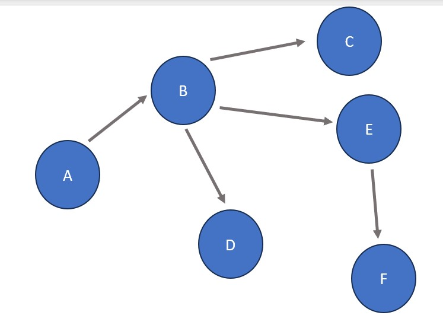
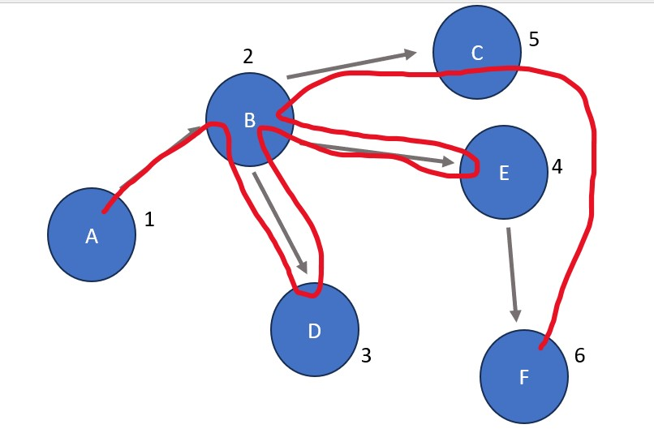

Definition:
Two processes designed to visit all nodes in a graph or tree data structure. A breadth-first search accomplishes this by exploring local nodes first before expanding outwards while a depth-first search focuses on following edges as far as possible before returning to explore previously reached nodes. See below for an example of each.
Real Life Example: Imagine you're going for a walk. You start at your house, head to the park, and then go to the store. When you get to the store, you realize that your wallet is gone! Performing a breadth-first search would mean that you look for it at/near the store and then slowly retrace your steps back in the way you came from. A depth-first search would mean going as "deep" down your path as possible and then retracing your steps from there. This translates to walking all the way back towards your house (looking for the wallet a little bit along the way), looking for your wallet at home, and then tracing your steps back towards the store.
Procedures for BFS/DFS starting from Node A:
Note: Depending on how the BFS/DFS is implemented, the children of a node could be explored left to right or right to left. In the examples below, we will explore left to right.
Initial Graph
Breadth-First Search: A is the starting node. Its only connection is B, so B is visited next. After B, D is visited due to it being the left-most child of B (see note above). The visit to D is followed by a visit to E and then C, the middle and right child nodes of B (notice that we explored all nodes directly connected to B before advancing any further). After B has been completely explored, D is checked for connections because it was the third node visited (after A and B - both completely explored already). D has no further connections so E is explored next due to it being the fourth overall node visited. E has one connection: F. After exploring E, C and F are explored in that order. Since neither have child nodes, the process is finished.
Order: A B D E C F
Depth-First Search: A is the starting node. Its only connection is B, so B is visited next. After B, D is visited due to it being the left-most child of B (see note above). The visit to D is followed by a visit to E (the next child node of B) due to D having no further connections. After E has been visited, E's child F is visited. Since F and E have no more connections, the search returns to B which has one more connection: C. Because C has no child nodes, the process is finished.
Order: A B D E F C
Fun Fact #1: A breadth-first search is implemented using a queue. This is because a queue's "first in first out" principal helps keep track of nodes that are within reach and releases them in an order that ensures local nodes are being visited first.
Fun Fact #2: A depth-first search is implemented using a stack. This is because a stack's "last in first out" principal helps keep track of nodes that have already been visited and releases them in an order that ensures their connections are being explored to maximum depth before returning to previous nodes.
Commonly Used In: